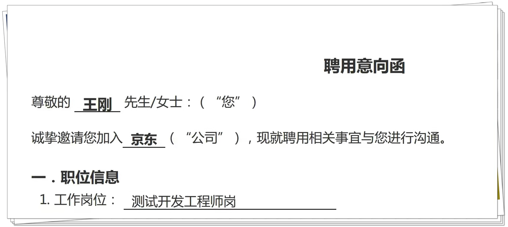

成功转岗测试开发回顾备战历程¶

大家好，我是dongfanger。
熟悉我的小伙伴可能知道我最近换工作了，岗位是测试开发：

上周五办完了离职，趁着这几天休息时间，回顾下这153天的备战历程。
转岗测试开发，这个想法是在今年春节产生的，一是测试开发相对来说工资要高一些，二是写技术博客让我找到了技术这个发展方向，三是因为我是计算机科班出身，跟我老婆聊完后她说，“我觉得你就应该做测试开发”。最后这句话一直激励着我，坚持下去。
转测试开发很不容易。我毕业以后就一直在做功能测试，也跳槽做过测试leader和接口测试。对于我来说，有一个极具诱惑力的职业方向是做管理，一方面是测试经验足够，另一方面是也有测试管理经验，加上公司业务需要，这条路已经明显的摆在眼前了。而且测试开发要求又比较高，我没有过这方面的经验，既要会开发测试平台，又要考算法题，对我来说挑战难度很大。很多次我都快要放弃了，就是这句话让我坚持了下来，我就应该做测试开发。
目标明确了以后，就会变得专注。首先是彻底掌握一门语言，我选择了Python，因为我用它做出了成绩，它也更容易学习。这体现在了“dongfanger”公众号的内容输出上，我重新整理了文章，只输出Python系列，包括Python入门、Python进阶等。计划2021年二刷完《流畅的Python》这本书，完成Python进阶系列全部文章。
然后是开发一个测试平台，这已经是公认的测试开发的基本技能，要求具备前后端开发能力。了解了Flask和Django后，由于自身Web技术比较欠缺，从零开始啃比较吃力，就选择了开箱即用的Django作为后端，结合Django REST Framework进行学习。前端则是在参考了大量（10来个）开源的测试平台后，选择了Vue框架，界面则是用的ElementUI。回顾这段经历，还是很痛苦的，踩了无数的坑，刚技术储备都学习了有一个多月，从最简单的基础概念，一点点实际动手操作，理解代码逻辑，前后端架构，数据如何传输。当完成了登录功能开发后，成就感一瞬间拉满。当用户管理增删改查做完以后，感觉自己已经摸到门路了。当把pytest接入到Django后，发现自己技术确实进步了。
测试开发的另外一项硬性要求是，算法。这是我从大学以来一直比较畏惧的东西。于是刚开始刷题的时候，在Python测试交流群和小伙伴们一起刷，每周末会发一道力扣的题，做完后截图到群里打卡。随着时间推移，坚持的小伙伴越来越少，只有一两个还在打卡。最后我索性就没有组织这个活动了，独自坚持刷。慢慢就养成了习惯，每到星期天的时候，就会不由自主的刷上一道。
最重要的其实是如何把技术应用到业务上，在公司落地，这是所有公司最关注的能力。也就是项目经验。做过哪些项目？在项目中你做了哪些事情？你是如何保障质量的？这三个问题是面试最核心的问题。为了丰富这些经验，需要努力的就是养成良好的职业习惯，比如我的做法是公司电脑只用来工作，上班尽量不玩手机，这样上班就会变得专注。专注了以后，就想办法只做对公司有用的东西。并且把每件事尽最大努力做到最好，假设做到60分就可以交差，试着去做到80分90分，甚至100分。虽然努力不一定能成功，但是只有努力了，才有机会被看到。先提升实力，再等待机会。
说到面试，我要实名diss背题这种方式。记得上次换工作我就尝试了背题，在网上抄了成百上千道题，杂七杂八，题没背多少，反而是把思路搞乱了，导致回答问题的时候有些逻辑混乱。能把简历上的内容说清楚才是王道，你写的精通一定要真的精通，不然就写熟练，写了解，否则可能会被按在地上摩擦。做过的项目最好提前复盘下，业务是怎么样的，技术栈如何，系统架构有没有了解，最好能突出个人亮点。若有必要，准备的时候用脑图画一下，模拟下可能会问到的问题，先答一遍。避免回答的时候只言片语就略过了。
在今年疫情后，我身边了解到不少测试开发被裁员了，而且是首当其冲的一批。尤其是用Python纯工具平台开发的。这也很好理解，公司是靠业务赚钱的，只有贴近业务才能创造价值，才能不那么容易替代。而测试平台是用来提升效能的，效能没有可以靠人力堆，但是业务没有公司就完蛋了。这反映出了测试行业发展的趋势，纯做工具平台的测开会越来越少，测试开发的核心价值是运用技术能力解决业务问题，通过技术手段提升质量和效率。这次面试也给了我启发，不要痴迷于技术，创造价值永远摆在第一位。
可能有小伙伴想问？是不是把Python学精通了就可以了？我的回答：是，也不是。如果能把Python精通了，在北上广深一线城市是很容易找到一份测试开发的工作的，而且真的精通，说不定也能通过蚂蚁金服等以Java为主要技术栈的公司，毕竟语言是相通的，学习能力强也会获得认可。但是像我在成都，是个二线城市，选择面要窄很多，薪资高点的公司基本都要求会Java。这次面试后，我也马上对博客做了个大调整，以Java技术栈为主，以Python技术栈为辅。虽然我对Django比较熟悉，但是问到Kafka的架构是怎么样的时候，我也只能弱弱的回答一句，目前还没怎么了解。我最近也观察了一下测试社区TesterHome上面的大佬，发现了一个规律，比较活跃的偏社区管理员的，基本上都是Java也很牛的。我已经在拼命转Java了。
每个技术人都应该拥有自己的博客。我写博客是在第二家公司开始的，这家公司大部分都是研究生博士学历，时不时发表一些论文期刊之类的，对我影响很大。到现在差不多写了两年左右了。写博客对我来说已经成为一种高效的学习方式，每次写完都能感觉到自己提升了，进步了，变强了，也秃了。本来计划2021年的目标是公众号粉丝突破1000，现在已经提前完成，全网累计应该有1500左右。这是最珍贵的收获。认识了不少大佬，开拓了人生眼界。相互交流，相互学习，相互吹嘘，共同进步。人外有人，天外有天，你知道的越多，你不知道的越多。写博客，最现实的好处就是，也许能获得一次面试机会。
最后我总结一下关键点：
想法
决心
编程语言
测试平台
算法
项目经验
简历
博客
学习没有捷径，找到适合自己的学习方法，努力努力再努力，如果想转测试开发，一定要意念坚定。
我是测试开发dongfanger，我们下期再见！